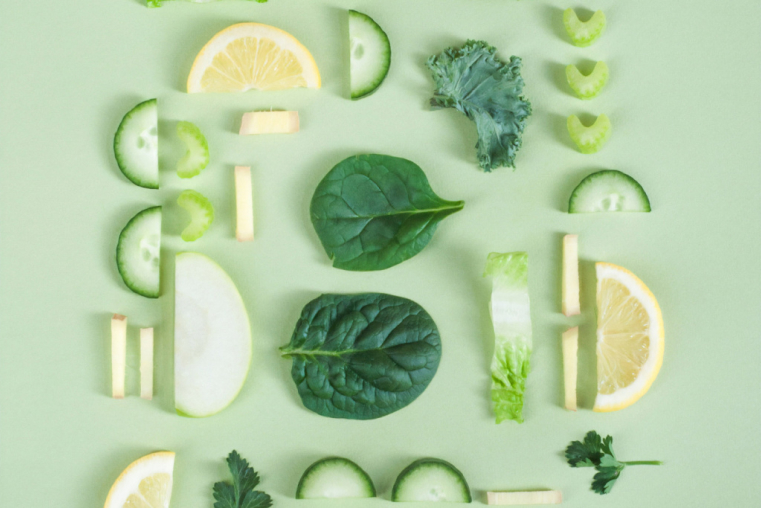

Главные факты о раздельном питании: за и против
Раздельное питание подразумевает, что пища должна быть простой, а для лучшего пищеварения продукты нужно правильно комбинировать между собой. Разбираемся, так ли это и что думают врачи о раздельном питании.
Главный принцип раздельного питания состоит в том, что организму человека сложно переваривать и усваивать смешанную еду. Сторонники этого подхода считают, что одновременное употребление белков, жиров и углеводов приводит к конфликту пищеварительных ферментов — и пока одна пища переваривается, другая «гниет». Но медицина уверяет, что по своей природе человек всеяден, а пищеварение — это упорядоченный процесс, включающий большое число ферментов.
 Рисунок 1. Ободочная кишкаРаздельное питание основано на идее, что одни продукты хорошо сочетаются друг с другом, а другие — нет. Впервые подобный подход был описан в аюрведической медицине несколько столетий назад. Но более детально идею сочетаемости пищи проработали в начале XX века. Основными теоретиками, труды которых по-прежнему подвергаются критике, стали Уильям Хэй и Герберт Шелтон, которого называют основоположником раздельного питания.
Его концепция строится на гипотезе, что разным продуктам нужна разная скорость переваривания, набор ферментов и уровень pH. Исходя из этого, например, организм не сможет правильно усвоить говяжий стейк с картофелем. И, наоборот, при поступлении пищи одного вида, например белковой, ферменты работают наиболее эффективно.
Диетологи, гастроэнтерологи и нутрициологи критикуют ее и считают «мифом о здоровье»,
— говорит Виктория Залесова, к. м. н, эндоскопист
- морепродуктах и жирной рыбе: сардинах, сёмге, тунце и печени трески
- яйцах
- говяжьем мясе и молоке
- семени льна
- грецких орехах
- авокадо
- Нераспознанная жажда. Пейте достаточно жидкости в течение дня
- Потребность в разнообразии. Часто тяга к углеводам вызвана недостатком в рационе
белков и жиров - Гипогликемия — резкое снижение глюкозы в крови. Такое бывает, если в рационе много
простых углеводов: сдоба, сладости - Заедание своих эмоций
- Клеточный голод — нехватка полезных веществ